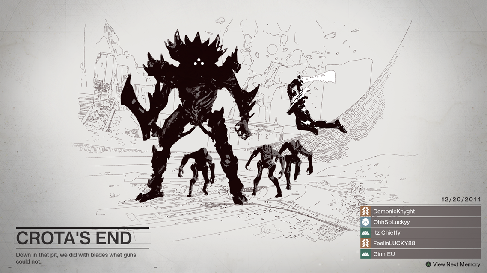

THE VAULT OF GLASS:
Vault of Glass is a Raid located on Venus. It is Bungie's most challenging activity that they've ever created.
The Vault is impossible to enter without at least three people and impossible to complete without at least four.
A full team of six players who are at least level 27 is highly recommended (30+ is best), but it can be tried at a lower level.
The Vault of Glass is the most difficult raid in the game, so try to keep the following tips in mind:
-Know where solid cover is.
-Understand enemy patterns.
-Know your balance of how much damage you can take before it's too late.
Communication is also an extremely important part of successfully making it through the raid. You and your team should always be talking,
letting each other know where you are at, locating enemy groups and spawns, and figuring out specific tasks for each teammate to take.
With the first shield brought back, the conflux in the middle of the room will open. From here, the team will split into three groups of two once again. The team with the first shield will defend the conflux. The other team will defend the Venus (right) portal while the final team goes inside to defeat the Gatekeeper and retrieve the second shield. With the second shield brought back to the conflux, have the entire team fight off the incoming Vex

CROTA'S END:
Crota's End is the Raid featured in the Destiny expansion The Dark Below. Guardians must venture deep beneath the surface of the
Moon to bring an end to the reign of the Hive's most powerful agent, the demi-god Crota.
At the beginning of the Raid, players begin at the edge of the Hellmouth. Stand on the large circular rune to summon the bridge, then leap down into the Hellmouth one at a time. After landing and restoring your health, you'll need to make your way through the pitch-black halls full of traps and Hive.
The key to getting through this area is to follow the brightly lit pillars through the corridors, while avoiding the spawning pits that litter the floor. Falling into one means instant death, so step carefully.
Be wary of the pillars once a Guardian has passed it - they can explode, and take you out with them.
If you have a Hunter with invisibility onboard, going invisible and slowly and carefully following the pillars is a good start.
Once players make it through the labyrinthian tunnels, they'll find another rune circle. Gather into it and fight off the Knights and Ogres that appear nearby, then cross the bridge over the abyss once it's spawned.
After passing through the first area, Guardians will now have to construct a bridge while maintaining control of two totems that become weaponized if their control is lost.
KING'S FALL:
Before getting started, we recommend bringing in a team that has at least an average of around 280 Light but upwards of 290 if possible, some sniper rifles, scout or pulse rifles, and a sword for good measure, though once practised it might not be necessary. Of course, bring any other gear you like as an option. Also, these are our strategies, not the definite ways of doing them. There are multiple ways of completing parts of the Raid, so don't be afraid to get creative.
The first area is pretty simple. Here, all you need to do is grab both of the relics and then insert them into the statues within a very short time between dunks. After grabbing each of the relics, shields are going to pop up that will prevent you from advancing, but you can damage them with any attacks to make them drop down and allow you to move forward.
The first set of relics are in the main room where you spawn. The next set is through the hallway on the left and right hand hallways and near the stairs The final sets are progressively farther down in the large open rooms. We recommend keeping a group of two in the main room to kill enemies as they spawn and to drop the shields that pop up if it's your first time. If you're more practised, teams of three on each side work very well. The relic carriers will be quite defenseless, so make sure you defend them. There is a timer between relic dunks as well as one that starts when you pick up the relic. This other timer starts for both relics when either relic is picked up. Once both teams are back in the main room, dunk the relic into the lit up statue until you’ve activated all six. This will make the portal spawn and allow you to move into the next section of the raid. You do not need to kill the enemies to go through the portal.
WRATH OF THE MACHINE:
The first part of the Raid is much like the Vault of Glass. You need to charge and defend points before you can progress. There are three contraptions that you need to charge. To charge them, you need to stand in a voltage point. Collect four and you can run up to a charging station and "dunk" the voltage into them. However, you're on a timer. If your timer runs out, the voltage will kill you. Luckily, all your charging stations charge together. You cannot damage the Vosik's shields conventionally with your weapons.
Once they're charged up, they'll start releasing SIVA Charges. These are bombs are what you can use to break the boss's shields. Throw them and hit him enough to bring his shields down and then you can damage his health. From there, rinse and repeat until you finish the encounter.
Watch out for Voltage Eaters! If these oversized Shanks get to your spinners, they'll drain the voltage from it.
After the fight, simply scale your way up the entrance and make your way inside
Once you've broken his shields, meet up in the middle and damage him. Getting someone to tether him with a Shadowshot will help a great deal. As you damage him, more clusters will be dropped. When they drop, the person or people elected to look for the room that get lit up should start looking around. Decide on a single room to go to and the entire team needs to get into there. Then, shoot the lock by the door. If someone might not make it, close the door. It's not worth the risk when you can revive them on Normal.
In summary:
1.Kill enemies
2.Throw SIVA Clusters at Vosik
3.Shoot SIVA screen (Repeat 1, 2, and 3 until shields break; skip 3 when shields are broken)
4.Damage Vosik
5.Hide in a side room and use the shield door